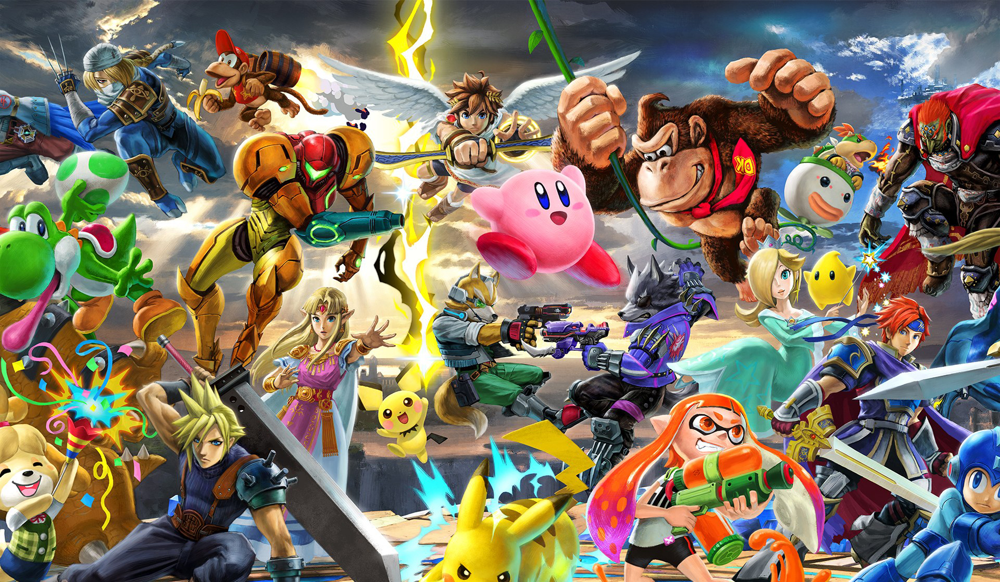
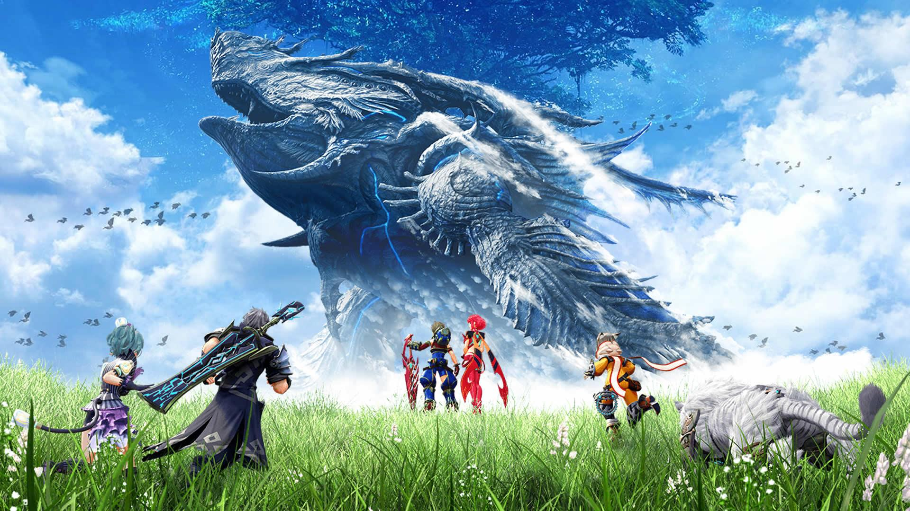
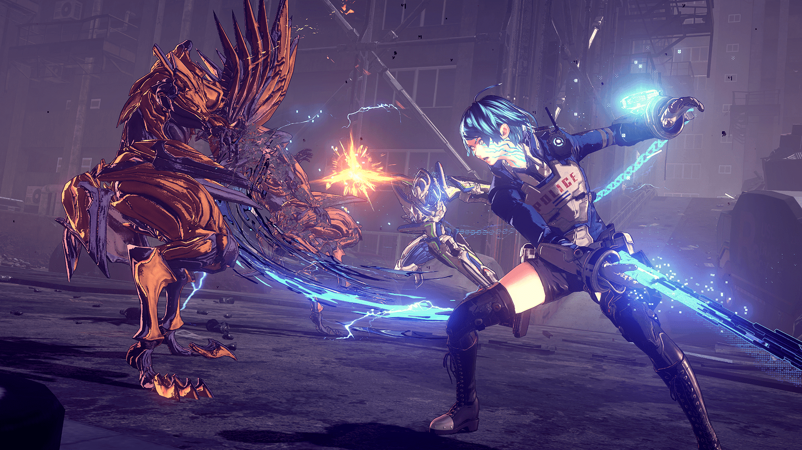
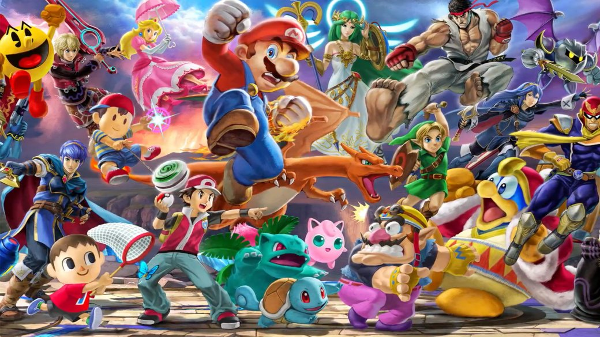

5 лучших эксклюзивных игр для Nintendo Switch
06.10.2020
Switch — весьма неожиданное устройство. Это одновременно и домашний центр развлечений с традиционной возможностью подключения к телевизору, и портативная игровая приставка, которая погружает в виртуальные миры, где бы вы ни были. Что до наиболее интересных проектов, доступных исключительно для Switch, то вот пятерка самых-самых.
The Legend of Zelda: Breath of the Wild
The Legend of Zelda вот уже на протяжении трех десятков лет остается одной из самых узнаваемых игровых серий в мире. При этом, несмотря на преимущественно эволюционное развитие франшизы, выход каждой новой части становится настоящим событием. Breath of the Wild — не исключение.

Впрочем, на этот раз история о спасении волшебного мира Хайруль (а вместе с ним и обязательной для сериала принцессы по имени Зельда) и борьбе молодого Линка со злом, возглавляемым демоном Ганоном, получилась куда масштабнее и разнообразнее. При том, что предыдущие «Зельды» никак нельзя назвать маленькими или лишенными размаха. Полное прохождение с учетом всех сайд-квестов займет примерно две сотни часов.
Xenoblade Chronicles 2
Оригинальная Xenoblade Chronicles, вышедшая давным-давно на Nintendo Wii, вот уже на протяжении многих лет входит во всевозможные подборки «лучших японских ролевых игр в истории», составляемых профильными изданиями. И если экспериментальная Xenoblade Chronicles X для Wii U такой всенародной любви не снискала, Xenoblade Chronicles 2 — это наконец-то истинная наследница столь любимой первой части.

Действие разворачивается в мире Альрест, вся поверхность которого покрыта облаками, а в центре растет магическое Мировое Дерево — по легенде, именно на его вершине находится райский Элизиум. Однако люди были изгнаны оттуда и сброшены вниз для жизни на титанах (которые и стали континентами впоследствии). В начале игры планета находится на грани всепоглощающей войны всех со всеми из-за приближающейся гибели титанов — в поисках места под солнцем народы готовы уничтожить друг друга. Главные герои отправляются в опасное путешествие в поисках Элизиума и пути возвращения в рай.
Astral Chain
Еще один высокобюджетный эксклюзив для Nintendо Switch. На этот раз в жанре зубодробительного слэшера в лучших традициях Bayonetta и Devil May Cry. И от именитой команды PlatinumGames — признанных мастеров, когда речь заходит о динамичных сражениях. Именно они подарили нам уже упомянутую выше Bayonetta, а еще работали над обласканной критиками Nier: Automata.

Astral Chain выглядит, как очень дорогое фантастическое аниме — картинка получилась сочная, насыщенная. Дизайнерам одинаково хорошо удались и пейзажи фантастического города будущего и персонажи.
История посвящена полицейским, использующим для поимки преступников призываемых существ из параллельных миров. У игры на удивление цельный и продуманный сюжет с харизматичными героями — за развитием событий любопытно даже просто наблюдать.
Super Smash Bros. Ultimate
Одна из лучших многопользовательских игр для консолей в этом поколении. Super Smash Bros. Ultimate, как и все другие выпуски сериала, предназначена в первую очередь для больших и веселых компаний. Да, тут есть однопользовательские режимы, но они годятся разве что для обучения.

В игре огромное количество персонажей, арен, отсылок к другим играм, около тысячи (!) музыкальных треков — настоящее сокровище для всех фанатов миров Nintendo. И, да, это действительно лучшая Super Smash Bros. в истории, вобравшая в себя все удачные идеи, что были в сериале.
Super Mario Odyssey
Марио снова отправляется на поиски принцессы, похищенной злобным Боузером — с этим супостатом мы сражаемся вот уже более 30 (реальных) лет. И хотя завязка тривиальна, Марио никогда не был игрой с акцентом на сюжет и диалоги. Это в первую очередь замечательный платформер, эталон жанра, на который остальным остается только равняться.
Super Mario Odyssey дарит такое же удовольствие от чистого геймплея, какое когда-то мы получали от Super Mario Bros. с 8-битной NES десятки лет назад. На это раз нас ждет множество интересных и, что не может не радовать, по-настоящему больших миров, встречи с десятками боссов и отточенная платформерная механика.
Super Mario Odyssey еще и невероятно разнообразна — количество механик зашкаливает. Тут и классический 3D-платформер, и уровни в духе оригинальных двухмерных «Марио», а еще — открытый мир и возможность вдоволь пострелять.